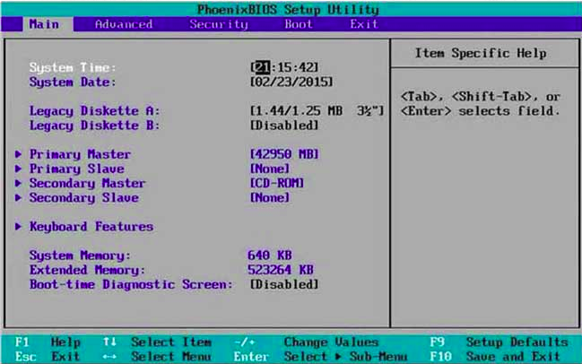
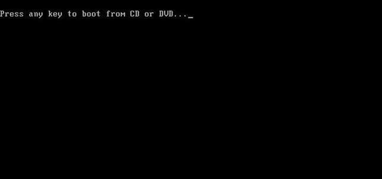
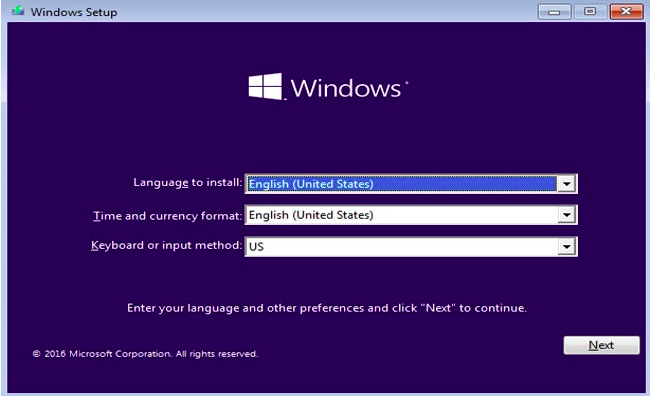
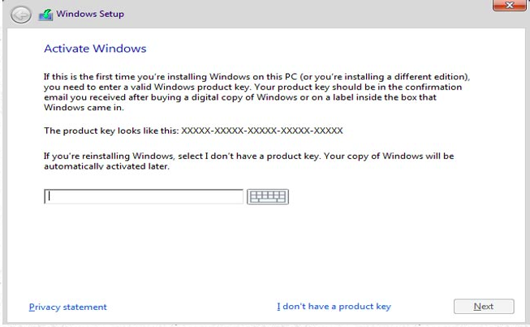
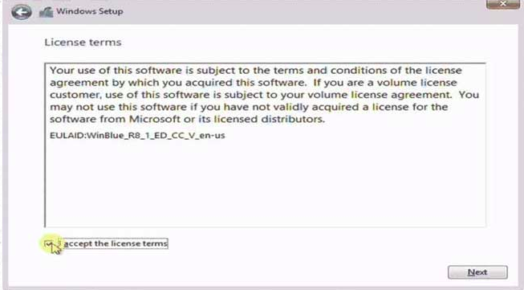
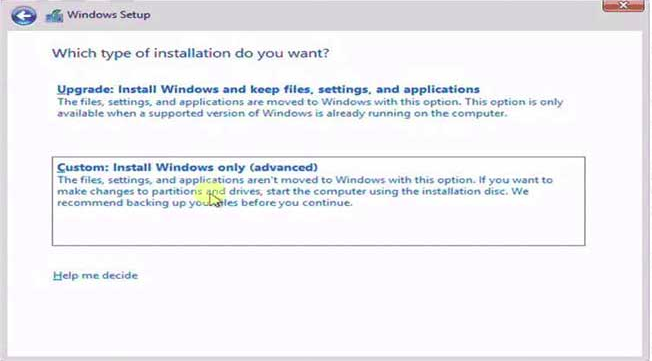
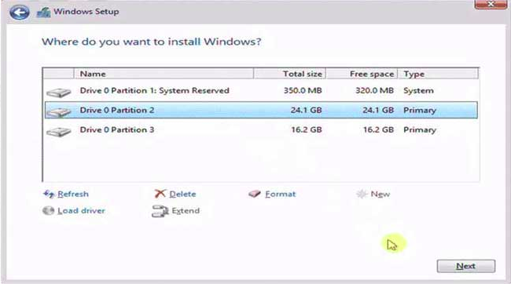
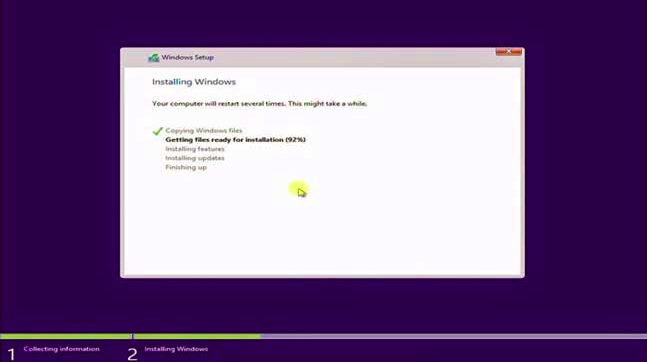

KATA PENGANTAR
Assalamu’alaikum warahmatullahi wabarakatuh
Segala puji bagi Allah SWT yang telah memberikan kami kemudahan sehingga kami dapat menyelesaikan makalah ini dengan tepat waktu. Tanpa pertolongan-Nya tentunya kami tidak akan sanggup untuk menyelesaikan makalah ini dengan baik. Shalawat serta salam semoga terlimpah curahkan kepada baginda tercinta kita yaitu Nabi Muhammad SAW yang kita nanti-natikan syafa’atnya di akhirat nanti.
Penulis mengucapkan syukur kepada Allah SWT atas limpahan nikmat sehat-Nya, baik itu berupa sehat fisik maupun akal pikiran, sehingga penulis mampu untuk menyelesaikan pembuatan untuk memenuhi tugas dari mata kuliah Pengelolaan Instalasi Komputer dengan judul “Proses Instalasi Windows 10”.
Penulis tentu menyadari bahwa makalah ini masih jauh dari kata sempurna dan masih banyak terdapat kesalahan serta kekurangan di dalamnya. Untuk itu, penulis mengharapkan kritik serta saran dari pembaca untuk makalah ini, supaya makalah ini nantinya dapat menjadi makalah yang lebih baik lagi. Kemudian apabila terdapat banyak kesalahan pada makalah ini penulis mohon maaf yang sebesar-besarnya.
Penulis juga mengucapkan terima kasih kepada semua pihak khususnya kepada guru Bahasa Indonesia kami yang telah membimbing dalam menulis makalah ini.
Demikian, semoga makalah ini dapat bermanfaat. Terima kasih.
Makassar, 14 April 2020
Karmila S
NIM: 10184047
BAB I
PENDAHULUAN
A. Latar Belakang
Pada windows 10 tentunya lebih sempurna dari pada windows sebelumnyaa, di dalam fitur-fitur windows 10 terasa lebih lengkap dan tampilannya pun lebih menarik.
Windows 10 merupakan sistem operasi komputer pribadi yang dikembangkan oleh Microsoft sebagai bagian dari keluarga sistem operasi Windows NT. Diperkenalkan pada tanggal 30 September 2014,[3] dirilis pada 29 Juli 2015 dan pada November 2015, Threshold 2 dari Windows 10 (v10.0.10586) dirilis ke publik.
Pertama diperkenalkan pada bulan April 2014 pada Konferensi Build, Windows 10 bertujuan untuk mengatasi kekurangan dalam antarmuka pengguna pertama kali diperkenalkan oleh Windows 8 dengan menambahkan mekanik tambahan yang dirancang untuk meningkatkan pengalaman pengguna untuk perangkat yang tidak ada layar sentuh (seperti komputer meja dan laptop), termasuk kebangkitan menu Mulai yang terlihat di Windows 7, sistem desktop maya, dan kemampuan untuk menjalankan aplikasi Bursa Windows dalam jendela pada desktop dari pada modus layar penuh.
B. Tujuan
- Untuk menambah wawasan tentang windows 10
- Untuk memenuhi tugas
C. Rumusan Masalah
- Bagaimana prosedure proses instalan windows 10
BAB II
PEMBAHASAN
A. Proses Instalan Windows 10
Persiapan Penginstalan
Sebelum memulai instalasi, Pastikan memenuhi persyaratan umum berikut untuk membantu khususnya bagi pemula sehingga memudahkan proses penginstalan:
Instalasi windows 10
Untuk menginstal Windows 10 pada komputer dan laptop:
- Nyalakan komputer atau Laptop. masukan terlebih dahulu Flashdisknya sebelum PC dinyalakan, agar terdeteksi dengan PC.
- Atur “Boot” atau “Booting” Pertama di Menu BIOS atau UEFI

Masuk Menu BIOS dengan menekan tombol “F2” terus-menerus dengan cepat SAAT menyalakan PC, mungkin pada merk lain dapat mencoba menekan tombol F1 / F9 / F10 / Del.
Sesudah masuk Menu “BIOS”, kemudian cari “Boot” dan Pastikan Booting pertama menggunakan Flashdisk sebagai medianya. Boot ini pada merk lain terkadang harus dicari dan disesuaikan.
- Masukan DVD Windows 10 buat yang memakai drive-optic sebagai medianya.
- Jika pengaturan Boot sudah benar, maka simpan atau “save” dan “restart”, nanti akan tampil seperti gambar dibawah, kemudian tekan ENTER untuk memulai proses instalasinya.

- Pilih Bahasa “English” kemudian klik “Next”.

- Klik “Install now” untuk melanjutkan.
- Masukan “Product Key” windows 10..

- Klik kotak kecil “I Accept the license terms”, dan kemudian klik “Next”.

- Pilih “Custom: Install Windows only (Advanced)”. Ini adalah prosedur “Clean Install” dan mulai instalasi dari awal agar sistem operasi terbebas dari virus dan bersih.

- Atur Partisi untuk memilih penginstalan sistem sesuai dengan keinginan. Tapi harap di ingat Partisi sistem operasi sebelumnya harus dihapus dengan menekan “Delete” kemudian ganti dengan partisi baru. Pengaturan ini bisa dilakuin memakai kursor mouse yang di atur pada partisi tertentu, nanti tombol pengaturan lengkap akan tersedia.

- “New” untuk membuat Partisi baru
- “Delete” untuk menghapus Partisi
- “Format” untuk format Partisi.
- Harap diperhatikan, Pastikan Partisi yang berisi data penting tidak terhapus, ini merupakan langkah yang sangat penting dan harus hati-hati, dan jika tidak yakin simpan aja dulu data penting pada tempat lain yang aman dan ulangi lagi prosesnya dari awal.
- Atur kursor pada partisi yang diinginkan untuk instalasi windows yang baru, kemudian klik Next seperti gambar di atas untuk melanjutkan.
- Memulai proses transfer dan instalasi secara otomatis.
